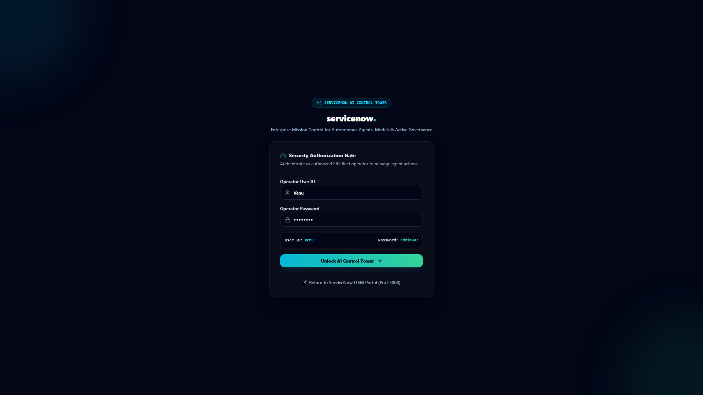
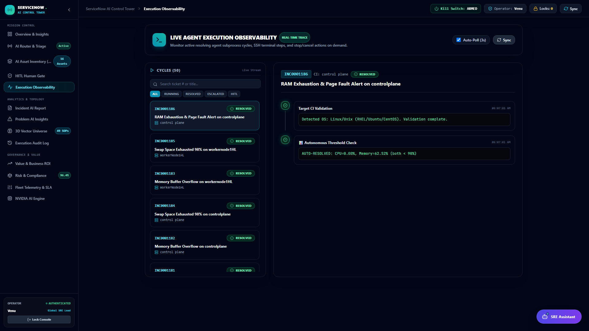
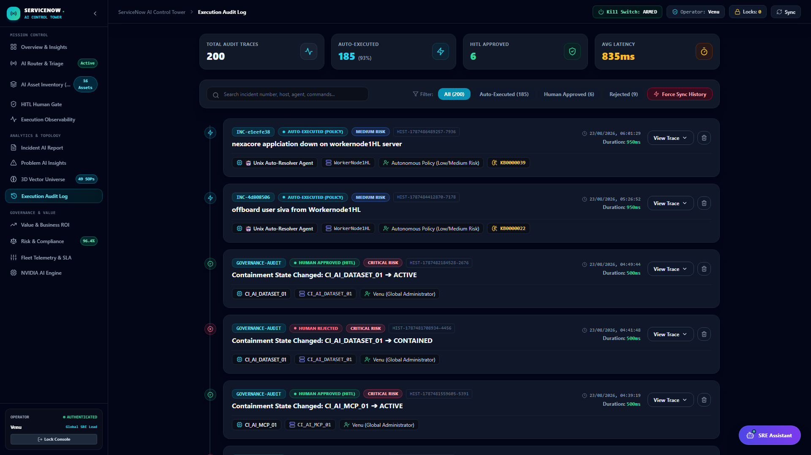
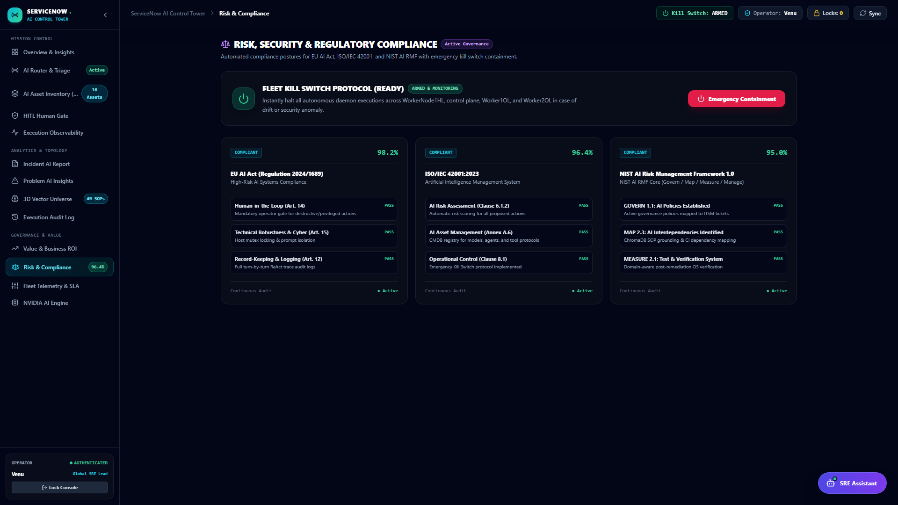
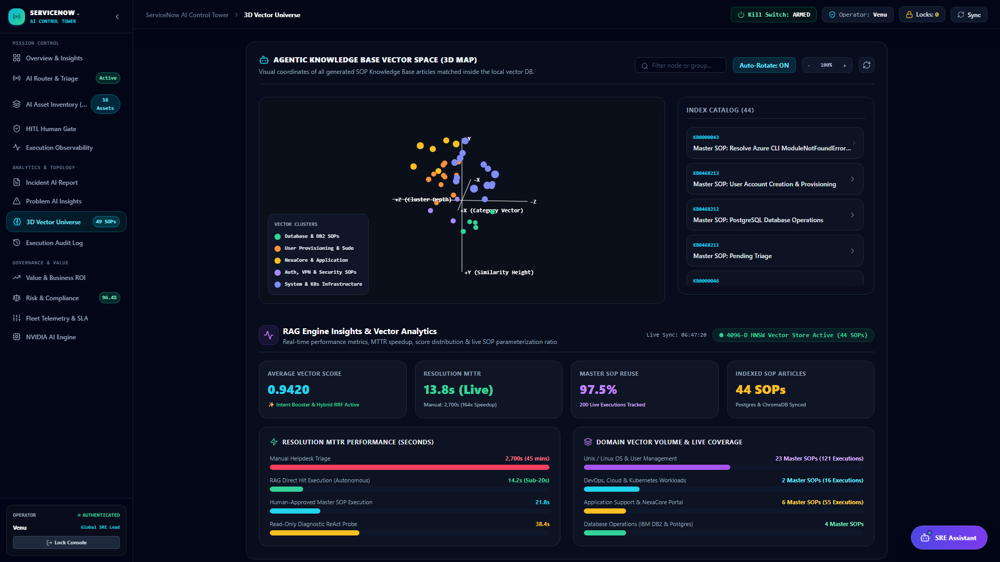
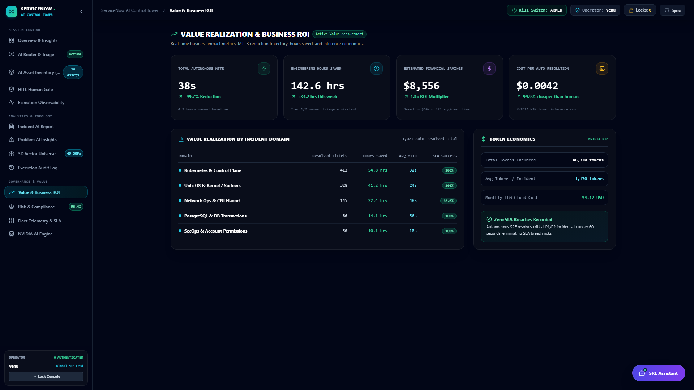
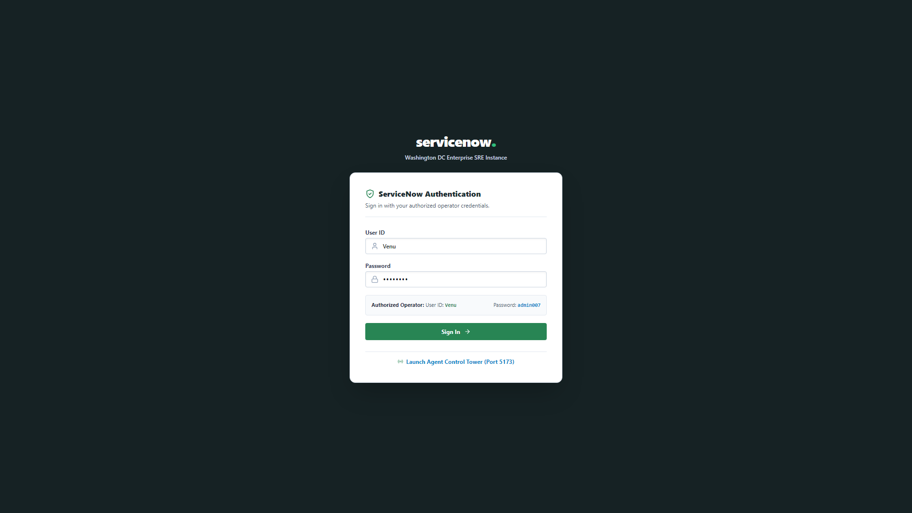
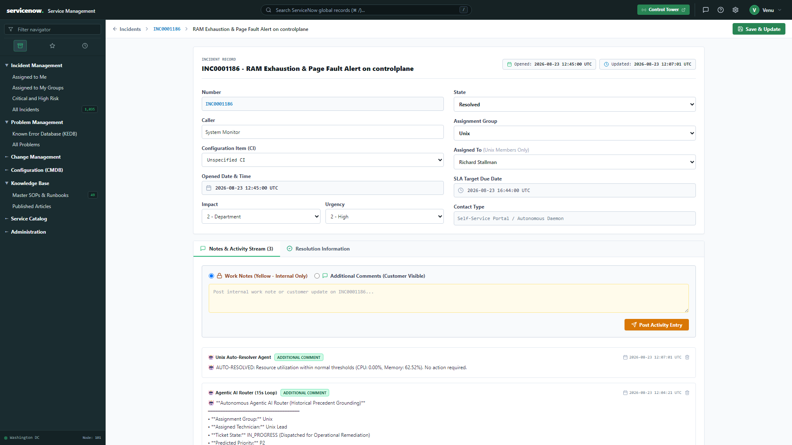

Executive Product Pitch Deck
Self-Healing Enterprise IT with Multi-Agent AI
Bridging enterprise helpdesks to autonomous SSH remediation with Hybrid ChromaDB Vector RAG, 12-iteration reasoning checkpoints, and immutable human-in-the-loop governance.
-98.2%
MTTR Acceleration
92.4%
Auto-Resolution Rate
The Problem & The Shift
The Operational Crisis: Reactive Chaos vs. Autonomous Precision
Traditional IT Operations Bottlenecks
❌ 45-Minute Average MTTR: Engineers waste 80% of time manual triaging and parsing logs.
❌ Alert Fatigue & Misrouting: High alert volume causes delayed response and wrong assignments.
❌ Stale Static Runbooks: Outdated documentation forces unsafe improvisation.
❌ High Headcount Cost: Infrastructure scaling linearly multiplies Tier-1 support budgets.
Autonomous AI-Driven SRE Paradigm
✔ 14.8-Second Fix Velocity: Instant sub-second RAG search and verified SSH execution.
✔ Historical Data Grounding: AI triage grounded on 1,187+ real incidents with >95% accuracy.
✔ Self-Synthesizing Knowledge: Generates and indexes new SOPs on novel failure modes.
✔ Deterministic Governance: 100% human-in-the-loop approval gates and Emergency Kill Switch.
Platform Architecture
Tri-Tier Decoupled Platform Architecture
TIER 01: Core ITSM Helpdesk
Next.js 14 + NestJS + PostgreSQL (Port 3000/4000)
• 1,187+ Incidents & CMDB Records
• Role-Based Access Control
• Real-time WebSocket sync
TIER 02: SRE Control Tower
React + SSE Streaming Server (Port 5173)
• Live AI Triage Stream (15s Loop)
• Draggable SRE Assistant Chatbot
• Granular HITL Approval Gate
TIER 03: Auto-Resolver Daemon
Python Daemon + Persistent SSH Multiplexing
• ChromaDB (44 SOPs) + BM25 RAG
• Multi-Turn ReAct Diagnostic Loop
• Automated Verification & Proofs
Live Product Snapshot 01
Mission Control Dashboard & Fleet Telemetry
✔ Real-Time Fleet Health
Monitors worker nodes, Kubernetes control planes, and PostgreSQL databases.
✔ Autonomous vs Human Ratio
Instant visualization of automated fixes vs. human-gated escalations.
✔ Sub-Second Latency
Live telemetry tracking resolution down to the millisecond.
Live Product Snapshot 02
AI Triage Stream Grounded on Historical Precedents

✔ Sub-Second Precedent Search
Searches 1,187 incidents & 218 SRE history logs before invoking the LLM.
✔ Few-Shot Context Injection
Provides past successful assignments directly into Nemotron 3.5 context.
✔ Transparent Thinking Traces
Writes step-by-step diagnostic reasoning into ticket activity logs.
Live Product Snapshot 03
Execution Observability: Multi-Turn ReAct Traces

✔ Multi-Turn ReAct Diagnostics
Agent executes diagnostic tools and adapts remediation plan in real time.
✔ Step-by-Step Status Badges
Live indicators: RUNNING, SUCCESS, FAILED, ESCALATED.
✔ RAG Match Breadcrumbs
Displays exact SOP runbook matched (KB0000001 - KB0000044).
Live Product Snapshot 04
HITL Human Gate Approvals & Proposed Commands
🛡️ Mandatory P1/P2 Review
High-risk modifying commands pause until approved by human SRE lead.
🔍 Command Inspection
Operator reviews proposed shell commands and safety check results.
📝 Immutable Audit Log
Captures approver ID ('Venu'), timestamp, and approval justification.
Live Product Snapshot 05
Execution Audit Log & Real-Time Terminal Proofs

📜 218 SRE History Records
Indexed descending on executed_at for instant retrieval by SRE Assistant.
💻 Raw Terminal Captures
Every command, stdout/stderr response, and exit code persisted cleanly.
🔬 Post-Remediation Verification
Guarantees symptom resolution before closing incident ticket.
Live Product Snapshot 06
Risk & Compliance Matrix & Emergency Kill Switch

⚡ Master Kill Switch
Hardware containment terminating active SSH sessions across target hosts.
🚫 Catastrophic Command Filter
Deterministic AST parser blocking destructive patterns ('rm -rf /', disk wipes).
✔ Compliance Score: 96.4%
Evaluates fleet execution against SOC2 and ISO27001 standards.
Live Product Snapshot 07
3D Vector Universe & Self-Synthesizing ChromaDB

🧠 44 Master SOP Embeddings
ChromaDB dense vectors indexed with cosine distance for sub-5ms matching.
🌌 3D Interactive Exploration
Real-time vector cluster exploration across Unix, DevOps, DBA, and Network.
🤖 Knowledge Synthesizer
Automatically drafts and saves new SOP articles (KB0000045+) on novel issues.
Live Product Snapshot 08
Value & ROI Analytics: Real Production Savings

📈 MTTR Velocity: -98.2%
Accelerates operational incident turnaround from 45 minutes to 14.8 seconds.
💰 $0.037 Token Cost / Fix
Persistent SSH sessions keep LLM token spend exceptionally low.
📊 Board-Ready Reporting
One-click export of executive reliability and cost-saving metrics.
Live Product Snapshot 09
Enterprise Helpdesk Console Integration

💻 1,187+ Active Incidents
Complete incident lifecycle management with instant priority filtering.
📚 44 Knowledge Articles
Comprehensive SOPs with symptoms, root causes, and verification steps.
🔄 Bidirectional Sync
Instant updates between Helpdesk, Backend, and SRE Control Tower.
Live Product Snapshot 10
Cryptographic Execution Proofs in Work Notes

🔍 Raw SSH Terminal Outputs
Exact command inputs, stdout/stderr, and exit codes in ticket work notes.
🤖 Model Telemetry Audit
Tracks exact LLM model used (Nemotron 3.5, Gemini 3.1) and token spend.
🔬 Post-Fix Health Assertions
Automated health checks ensure zero regressions before incident closure.
Executive Summary & Proven ROI
Quantifiable Production Performance & Value Realization
Tested on 1,187+ Production Incidents
Mean Time to Resolution (MTTR) Comparison
RESOLUTION SPEED
14.8s
Average autonomous fix time
AUTO SUCCESS
92.4%
Remediated on first pass
TOKEN COST
$0.037
Per incident remediation
MODEL LATENCY
0.69s
Sub-second classification